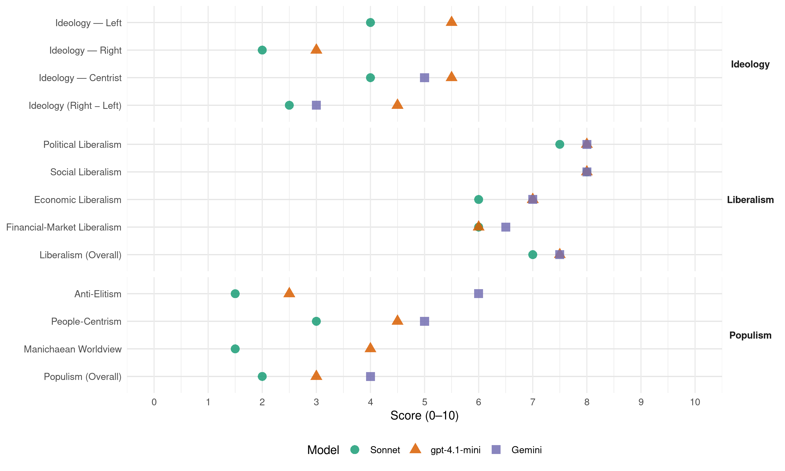

PNV/EAJ (Spain, 2023)
manifesto_id 33902_202307
Get full text: This site shows derived annotations and short verbatim quotes only. The full manifesto text is © Manifesto Project / WZB — obtain it via manifesto-project.wzb.eu using the manifesto_id above.
Headline scores
| Dimension | Sonnet | gpt-4.1-mini | Gemini |
|---|---|---|---|
| Populism (Overall) | 2.0 | 3.0 | 4.0 |
| Anti-Elitism | 1.5 | 2.5 | 6.0 |
| People-Centrism | 3.0 | 4.5 | 5.0 |
| Manichaean Worldview | 1.5 | 4.0 | – |
| Ideology (Right − Left) | 2.5 | 4.5 | 3.0 |
| Liberalism (Overall) | 7.0 | 7.5 | 7.5 |
| Political Liberalism | 7.5 | 8.0 | 8.0 |
| Social Liberalism | 8.0 | 8.0 | 8.0 |
| Economic Liberalism | 6.0 | 7.0 | 7.0 |
| Financial-Market Liberalism | 6.0 | 6.0 | 6.5 |
Evidence per dimension
Economic Liberalism
Gemini · score 7.0 · verified · chunk 1
“favorecer el desarrollo de proyectos empresariales”
financiera como elementos fundamentales para favorecer el desarrollo de proyectos empresariales, la actividad económica y la inversión
Gemini · score 7.0 · verified · chunk 2
“economía más competitiva que favorezca un mayor crecimiento”
mantenimiento del empleo a partir de una economía más competitiva que favorezca un mayor crecimiento. Este pacto, que debe englobar al conjunto
gpt-4.1-mini · score 7.0 · verified · chunk 1
“fiscalidad justa y redistributiva”
05. HORIZONTE ECONÓMICO: FONDOS EUROPEOS Y FISCALIDAD JUSTA Y REDISTRIBUTIVA. Esta legislatura se ha caracterizado por una acumulación de crisis con dos shocks concatenados, la pandemia de la covid y la invasión rusa de Ucrania, cuyo impacto en la economía ha sido considerable.
gpt-4.1-mini · score 7.0 · verified · chunk 2
“impulsar la competitividad y desarrollar un tejido productivo resiliente”
Configurar la política industrial sobre el eje de la colaboración público-privada. Para impulsar la competitividad y desarrollar un tejido productivo resiliente. Las empresas no abordan proyectos de alto riesgo tecnológico y alto impacto industrial porque carecen de músculo financiero para hacerlo (especialmente las pymes) y el sistema financiero tampoco está preparado para impulsar este tipo de proyectos…
Sonnet · score 6.0 · verified · chunk 1
“incentivos para la inversión, para el emprendimiento”
garantice el mantenimiento del Estado de bienestar con ingresos suficientes para su financiación y que, a su vez, genere incentivos para la inversión, para el emprendimiento y para el crecimiento
Sonnet · score 6.0 · verified · chunk 2
“economía más competitiva que favorezca un mayor crecimiento”
eje fundamental la creación y mantenimiento del empleo a partir de una economía más competitiva que favorezca un mayor crecimiento
Financial-Market Liberalism
Gemini · score 6.0 · verified · chunk 1
“Defensa del Cliente Financiero para facilitar a la ciudadanía”
creación de la Autoridad Administrativa Independiente de Defensa del Cliente Financiero para facilitar a la ciudadanía y a las pymes
Gemini · score 7.0 · verified · chunk 2
“Completar la Unión Bancaria (Tercer pilar), sistema de garantía de depósitos”
Una instancia que permitiría a los territorios involucrados trabajar en un espíritu plenamente europeo y europeísta. Completar la Unión Bancaria (Tercer pilar), sistema de garantía de depósitos común o Fondo Europeo de garantía de depósitos
gpt-4.1-mini · score 6.0 · verified · chunk 1
“modificación de la Ley 3/2013 de Creación de la Comisión Nacional de los Mercados y la competencia (CNMC)”
Impulsar la modificación de la Ley 3/2013 de Creación de la Comisión Nacional de los Mercados y la competencia (CNMC) para adecuarla a las directivas de la Unión Europea en materia de competencia.
gpt-4.1-mini · score 6.0 · verified · chunk 2
“Completar la Unión Bancaria (Tercer pilar), sistema de garantía de depósitos común”
Completar la Unión Bancaria (Tercer pilar), sistema de garantía de depósitos común o Fondo Europeo de garantía de depósitos para asegurar por igual todos los depósitos. Circunscripciones electorales territoriales. En coherencia con el reconocimiento constitucional de las nacionalidades que forman parte del Estado y de la diversidad que caracteriza a la Unión Europea, debe garantizarse que estas estén representadas en el nuevo Europarlamento.
Sonnet · score 6.0 · verified · chunk 1
“Autoridad Administrativa Independiente de Defensa del Cliente Financiero”
Retomar la creación de la Autoridad Administrativa Independiente de Defensa del Cliente Financiero para facilitar a la ciudadanía y a las pymes un medio alternativo de procedimiento judicial ágil para resolver las discrepancias en los asuntos o relaciones con los operadores financieros
Sonnet · score 6.0 · verified · chunk 2
“Completar la Unión Bancaria”
Completar la Unión Bancaria (Tercer pilar), sistema de garantía de depósitos común o Fondo Europeo de garantía de depósitos para asegurar por igual todos los depósitos
Political Liberalism
Gemini · score 8.0 · verified · chunk 1
“respeto a los principios de la democracia liberal”
cuentas, la participación ciudadana, la responsabilidad y el respeto a los principios de la democracia liberal sean los comportamientos
Gemini · score 8.0 · verified · chunk 2
“defensa de los Derechos Humanos, de la democracia”
compromiso con el proyecto europeo, con sus principios y valores fundacionales: la defensa de los Derechos Humanos, de la democracia, de las libertades
gpt-4.1-mini · score 8.0 · verified · chunk 1
“defensa de los Derechos Humanos”
03. LIDERAR DERECHOS Y LIBERTADES EAJ-PNV tiene una larga tradición de defensa de los Derechos Humanos, una misión que nunca es definitiva, que demanda estar siempre vigilante.
gpt-4.1-mini · score 8.0 · verified · chunk 2
“defensa de los Derechos Humanos, de la democracia, de las libertades”
EAJ-PNV ha demostrado su clara vocación europeísta y su compromiso con el proyecto europeo, con sus principios y valores fundacionales: la defensa de los Derechos Humanos, de la democracia, de las libertades, de la economía social de mercado, de la diversidad y del respeto y del reconocimiento mutuo entre los Pueblos de Europa como base para la paz, la convivencia y el progreso económico, social y cultural.
Sonnet · score 8.0 · verified · chunk 1
“principios de la democracia liberal”
principios como la transparencia y la rendición de cuentas, la participación ciudadana, la responsabilidad y el respeto a los principios de la democracia liberal sean los comportamientos que guíen la acción política
Sonnet · score 7.0 · verified · chunk 2
“defensa de los Derechos Humanos, de la democracia”
sus principios y valores fundacionales: la defensa de los Derechos Humanos, de la democracia, de las libertades, de la economía social de mercado
Liberalism (Overall)
Gemini · score 7.0 · verified · chunk 1
“respeto a los principios de la democracia liberal”
cuentas, la participación ciudadana, la responsabilidad y el respeto a los principios de la democracia liberal sean los comportamientos
Gemini · score 8.0 · verified · chunk 2
“defensa de los Derechos Humanos, de la democracia”
compromiso con el proyecto europeo, con sus principios y valores fundacionales: la defensa de los Derechos Humanos, de la democracia, de las libertades
gpt-4.1-mini · score 8.0 · verified · chunk 1
“defensa de los Derechos Humanos”
03. LIDERAR DERECHOS Y LIBERTADES EAJ-PNV tiene una larga tradición de defensa de los Derechos Humanos, una misión que nunca es definitiva, que demanda estar siempre vigilante.
gpt-4.1-mini · score 7.0 · verified · chunk 2
“defensa de los Derechos Humanos, de la democracia, de las libertades”
EAJ-PNV ha demostrado su clara vocación europeísta y su compromiso con el proyecto europeo, con sus principios y valores fundacionales: la defensa de los Derechos Humanos, de la democracia, de las libertades, de la economía social de mercado, de la diversidad y del respeto y del reconocimiento mutuo entre los Pueblos de Europa como base para la paz, la convivencia y el progreso económico, social y cultural.
Sonnet · score 7.0 · verified · chunk 1
“principios de la democracia liberal”
el respeto a los principios de la democracia liberal sean los comportamientos que guíen la acción política e institucional
Sonnet · score 7.0 · verified · chunk 2
“economía social de mercado, de la diversidad”
la defensa de los Derechos Humanos, de la democracia, de las libertades, de la economía social de mercado, de la diversidad y del respeto
Anti-Elitism
Gemini · score 6.0 · verified · chunk 1
“Frente a la política efectista y de apariencias”
precisas y reales. Frente a la política efectista y de apariencias que se hace en Madrid, la palabrería vacía
gpt-4.1-mini · score 3.0 · verified · chunk 1
“la política efectista y de apariencias que se hace en Madrid, la palabrería vacía, la ineficiencia, el populismo, el autoritarismo”
Frente a la política efectista y de apariencias que se hace en Madrid, la palabrería vacía, la ineficiencia, el populismo, el autoritarismo, la incapacidad para el diálogo y el acuerdo, la inestabilidad institucional y económica, desde Euskadi hay una alternativa, un voto realmente útil: EAJ-PNV.
gpt-4.1-mini · score 2.0 · verified · chunk 2
“la necesidad de potenciar la negociación colectiva”
…defendemos la necesidad de potenciar la negociación colectiva, que debe atender en su eficacia a criterios de la realidad económica en la que se inserta, debiendo, por tanto, reflejarse la prevalencia de los convenios colectivos de Comunidad Autónoma sobre los estatales cuando resulten más favorables para los y las trabajadoras. Implantación de la Formación Profesional Dual a todos los niveles…
Sonnet · score 2.0 · verified · chunk 1
“el populismo, el autoritarismo, la incapacidad para el diálogo”
Frente a la política efectista y de apariencias que se hace en Madrid, la palabrería vacía, la ineficiencia, el populismo, el autoritarismo, la incapacidad para el diálogo y el acuerdo
Sonnet · score 1.0 · verified · chunk 2
“la mejor política industrial es la que no existe”
Nunca hemos compartido aquella idea de que la mejor política industrial es la que no existe. Los avances en el Estado en política industrial han sido muy tímidos
Ideology — Centrist
Gemini · score 5.0 · verified · chunk 1
“Frente a la política efectista y de apariencias”
precisas y reales. Frente a la política efectista y de apariencias que se hace en Madrid, la palabrería vacía
gpt-4.1-mini · score 6.0 · verified · chunk 1
“Una voz que tenga capacidad de interlocución y acuerdo. Una voz firme y constructiva.”
Ante el incierto panorama de la próxima legislatura, es necesario que tu voz esté presente de nuevo en Madrid. Una voz que tenga capacidad de interlocución y acuerdo. Una voz firme y constructiva. Nuestra propuesta queda recogida en este programa que te presentamos.
gpt-4.1-mini · score 5.0 · verified · chunk 2
“generando actividad económica y riqueza en colaboración público-privada”
Uno de los principios de EAJ-PNV es su compromiso con la construcción de una Euskadi para todas y para todos a través de la generación de una prosperidad inclusiva, generando actividad económica y riqueza en colaboración público-privada, pero compatibilizándola con la protección social, con la justicia social. En este sentido, EAJ-PNV mantiene un compromiso irrevocable con la construcción de una Euskadi también para todas las generaciones y, especialmente, con las personas mayores y jubiladas…
Sonnet · score 4.0 · verified · chunk 1
“diálogo, la negociación y el pacto”
EAJ-PNV seguirá intentando propiciar ese diálogo, la negociación y el pacto en la búsqueda de soluciones
Sonnet · score 4.0 · verified · chunk 2
“gran pacto de cooperación entre todos los sectores”
La creación y la mejora de la calidad del empleo precisan de un gran pacto de cooperación entre todos los sectores sociales
Ideology — Left
gpt-4.1-mini · score 7.0 · verified · chunk 1
“fiscalidad justa y redistributiva”
05. HORIZONTE ECONÓMICO: FONDOS EUROPEOS Y FISCALIDAD JUSTA Y REDISTRIBUTIVA. Esta legislatura se ha caracterizado por una acumulación de crisis con dos shocks concatenados, la pandemia de la covid y la invasión rusa de Ucrania, cuyo impacto en la economía ha sido considerable.
gpt-4.1-mini · score 4.0 · verified · chunk 2
“defensa de un Sistema público de pensiones que siga siendo uno de los pilares básicos”
EAJ-PNV aboga por la defensa de un Sistema público de pensiones que siga siendo uno de los pilares básicos y fundamentales del estado del bienestar, basado en la solidaridad intergeneracional y en la redistribución de la riqueza, generada a través de empleos de calidad y de aportaciones públicas (en las no contributivas) que garanticen unas pensiones dignas y predecibles en un marco de transparencia, sostenido por fuentes de financiación ciertas.
Sonnet · score 3.0 · verified · chunk 1
“fiscalidad justa y redistributiva”
HORIZONTE ECONÓMICO: FONDOS EUROPEOS Y FISCALIDAD JUSTA Y REDISTRIBUTIVA
Sonnet · score 5.0 · verified · chunk 2
“redistribución de la riqueza, generada a través de empleos”
basado en la solidaridad intergeneracional y en la redistribución de la riqueza, generada a través de empleos de calidad y de aportaciones públicas
Ideology (Right − Left)
Gemini · score 3.0 · verified · chunk 1
“Frente a la política efectista y de apariencias”
precisas y reales. Frente a la política efectista y de apariencias que se hace en Madrid, la palabrería vacía
gpt-4.1-mini · score 5.0 · verified · chunk 1
“fiscalidad justa y redistributiva”
05. HORIZONTE ECONÓMICO: FONDOS EUROPEOS Y FISCALIDAD JUSTA Y REDISTRIBUTIVA. Esta legislatura se ha caracterizado por una acumulación de crisis con dos shocks concatenados, la pandemia de la covid y la invasión rusa de Ucrania, cuyo impacto en la economía ha sido considerable.
gpt-4.1-mini · score 4.0 · verified · chunk 2
“defensa de un Sistema público de pensiones que siga siendo uno de los pilares básicos”
EAJ-PNV aboga por la defensa de un Sistema público de pensiones que siga siendo uno de los pilares básicos y fundamentales del estado del bienestar, basado en la solidaridad intergeneracional y en la redistribución de la riqueza, generada a través de empleos de calidad y de aportaciones públicas (en las no contributivas) que garanticen unas pensiones dignas y predecibles en un marco de transparencia, sostenido por fuentes de financiación ciertas.
Sonnet · score 2.0 · verified · chunk 1
“una voz firme y constructiva”
Una voz que tenga capacidad de interlocución y acuerdo. Una voz firme y constructiva.
Sonnet · score 3.0 · verified · chunk 2
“colaboración público-privada”
Configurar la política industrial sobre el eje de la colaboración público-privada. Para impulsar la competitividad y desarrollar un tejido productivo resiliente
Ideology — Right
gpt-4.1-mini · score 3.0 · verified · chunk 1
“defenderemos el reconocimiento nacional de Euskadi y la bilateralidad en relación con el Estado a través de un ejercicio compartido de la soberanía”
Por todo ello: EAJ-PNV defenderá el reconocimiento nacional de Euskadi y la bilateralidad en relación con el Estado a través de un ejercicio compartido de la soberanía. Porque más autogobierno significa más bienestar.
gpt-4.1-mini · score 3.0 · verified · chunk 2
“defensa tenaz de nuestra posición estratégica como territorio”
…y es ahí donde EAJ-PNV hace una defensa tenaz de nuestra posición estratégica como territorio, en defensa de la ciudadanía vasca y de su tejido económico, para que Euskadi sea un territorio competitivo en Europa y apostando por consolidar nuestro país como ‘eslabón clave’ de las comunicaciones y conectividad del corredor Atlántico europeo.
Sonnet · score 2.0 · verified · chunk 1
“defensa de los Derechos Históricos”
actuar, por tanto, como un dique de contención ante el riesgo de involución de nuestro autogobierno, en defensa de los Derechos Históricos y contra los ataques a nuestra identidad nacional
Sonnet · score 2.0 · verified · chunk 2
“migración legal, segura y ordenada”
adoptar medidas para que esta incorporación sea ‘legal, segura y ordenada’, en línea con las recomendaciones del reciente Pacto Mundial para la Migración
Manichaean Worldview
gpt-4.1-mini · score 4.0 · verified · chunk 1
“la política efectista y de apariencias que se hace en Madrid, la palabrería vacía, la ineficiencia, el populismo, el autoritarismo”
Frente a la política efectista y de apariencias que se hace en Madrid, la palabrería vacía, la ineficiencia, el populismo, el autoritarismo, la incapacidad para el diálogo y el acuerdo, la inestabilidad institucional y económica, desde Euskadi hay una alternativa, un voto realmente útil: EAJ-PNV.
Sonnet · score 2.0 · verified · chunk 1
“la intransigencia del todo o nada”
no ha podido culminarse -después de años de trabajo y más de medio centenar de reuniones- por la intransigencia del todo o nada de EH Bildu y ERC
Sonnet · score 1.0 · verified · chunk 2
“competencia desleal de las importaciones”
Reforzar los instrumentos de defensa comercial de forma que se garantice el acceso a los mercados exteriores y se evite la competencia desleal de las importaciones
People-Centrism
Gemini · score 5.0 · verified · chunk 1
“nuestra acción tiene a las personas como protagonistas”
te presentamos. Como verás, nuestra acción tiene a las personas como protagonistas. Con propuestas precisas y reales.
gpt-4.1-mini · score 6.0 · verified · chunk 1
“Nuestra propuesta queda recogida en este programa que te presentamos. Como verás, nuestra acción tiene a las personas como protagonistas.”
Ante el incierto panorama de la próxima legislatura, es necesario que tu voz esté presente de nuevo en Madrid. Una voz que tenga capacidad de interlocución y acuerdo. Una voz firme y constructiva. Nuestra propuesta queda recogida en este programa que te presentamos. Como verás, nuestra acción tiene a las personas como protagonistas. Con propuestas precisas y reales.
gpt-4.1-mini · score 3.0 · verified · chunk 2
“generando actividad económica y riqueza en colaboración público-privada”
Uno de los principios de EAJ-PNV es su compromiso con la construcción de una Euskadi para todas y para todos a través de la generación de una prosperidad inclusiva, generando actividad económica y riqueza en colaboración público-privada, pero compatibilizándola con la protección social, con la justicia social. En este sentido, EAJ-PNV mantiene un compromiso irrevocable con la construcción de una Euskadi también para todas las generaciones y, especialmente, con las personas mayores y jubiladas…
Sonnet · score 3.0 · verified · chunk 1
“las personas como protagonistas”
Como verás, nuestra acción tiene a las personas como protagonistas. Con propuestas precisas y reales.
Sonnet · score 3.0 · verified · chunk 2
“construcción de una Euskadi para todas y para todos”
su compromiso con la construcción de una Euskadi para todas y para todos a través de la generación de una prosperidad inclusiva
Populism (Overall)
Gemini · score 4.0 · verified · chunk 1
“Frente a la política efectista y de apariencias”
precisas y reales. Frente a la política efectista y de apariencias que se hace en Madrid, la palabrería vacía
gpt-4.1-mini · score 4.0 · verified · chunk 1
“la política efectista y de apariencias que se hace en Madrid, la palabrería vacía, la ineficiencia, el populismo, el autoritarismo”
Frente a la política efectista y de apariencias que se hace en Madrid, la palabrería vacía, la ineficiencia, el populismo, el autoritarismo, la incapacidad para el diálogo y el acuerdo, la inestabilidad institucional y económica, desde Euskadi hay una alternativa, un voto realmente útil: EAJ-PNV.
gpt-4.1-mini · score 2.0 · verified · chunk 2
“la necesidad de potenciar la negociación colectiva”
…defendemos la necesidad de potenciar la negociación colectiva, que debe atender en su eficacia a criterios de la realidad económica en la que se inserta, debiendo, por tanto, reflejarse la prevalencia de los convenios colectivos de Comunidad Autónoma sobre los estatales cuando resulten más favorables para los y las trabajadoras. Implantación de la Formación Profesional Dual a todos los niveles…
Sonnet · score 2.0 · verified · chunk 1
“el populismo, el autoritarismo, la incapacidad para el diálogo”
Frente a la política efectista y de apariencias que se hace en Madrid, la palabrería vacía, la ineficiencia, el populismo, el autoritarismo
Sonnet · score 2.0 · verified · chunk 2
“prosperidad inclusiva, generando actividad económica”
construcción de una Euskadi para todas y para todos a través de la generación de una prosperidad inclusiva, generando actividad económica y riqueza
Social Liberalism